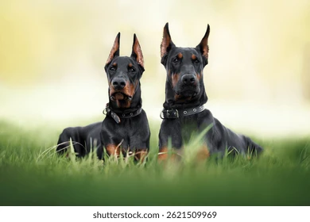

Vrh "Dobrman3" – Narozeno 3.10
Matka: Astra – Výborná zdravotní vyšetření, úspěšná na výstavách, vyrovnaná povaha.
Otec: Bruno – Šampion krásy, silná kostra, skvělý rodinný pes i pracant.
K dispozici jsou volná štěňátka (pejsci i fenečky) v černé barvě s pálením.
